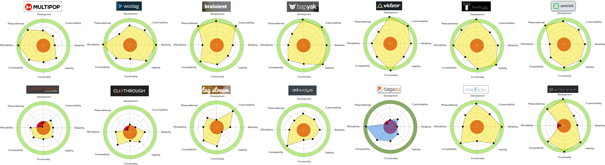

Tagazu LLC is a startup company within the 1776 Incubator, founded by Samira and Aurimas Sabulis. They offer an online interactive video tagging platform that allows users to add clickable hotspots to moving and still objects. It links content creators with companies, brands, and individuals, not only increasing viewer engagement but also opening up monetization.
The Problem
From our initial analysis and review of the current Tagazu experience, we were able to immediately identify their key, which also happened to be their main problem…Tags! Every other thing on their site would be for naught unless the very thing they brought to the table walked the walk. The platform worked in their eyes, but first-time users did not see eye-to-eye. Here lay the valley that we came to bridge- the client had described themselves as “dynamic, revolutionary, and unique” when in reality its interface was lagging behind their proclaimed technology. We set out to align ourselves with the user while juggling both business and technology restraints.
- Team: Camille Petricola, Dana Scheiffer, & Andrew I. Kim
- Duration: 2 weeks
- Tools: Axure, Sketch, Google Drive, Marvel, Slack, Trello, Adobe Photoshop, Evernote, Skype, Stickie Notes, Sharpies, PrismaColor
- Role: Information Architecture, Personas, Competitive Analysis, Sketching, Wireframing
- Location: Washington D.C.
- Tags: Web, UX/UI
-
Table of Contents:
I. Strategy & Goal
II. Research
III. Ideation
IV. Iteration
V. Finalization
Strategy & Goal
So we as a UX team could not magically make the technology fully automated as we would have imagined, but what we could do is come up with critical recommendations for improving overall user experience. By visualizing and presenting solutions according to best practices and user expectations in this field, Tagazu would be able to take the next steps to grow.
Immediately we saw that the coin had two sides, the Viewer who can watch these interactive videos, and the Creators who will make the videos interactive. The Viewer had it fairly easy, just click play like a normal video, until there appeared a tag. The Creator had it tough, they were actually adding a completely new layer to their content, and there were many more places it could all go wrong.
So we decided to start there, given that it was the most vital offering Tagazu had for users on its site. Then work backwards into all of the other pages and screens. We envisioned a user’s journey, clawing and peeling back the steps until we knew where they would start, all the way through to the bitter end, until the cycle would begin again.
The new Tagazu would have to be Simple, Elegant, and Easy to understand so that anyone could either tag, or interact with tags.
Research
Our initial stakeholder interview began with a Skype Call, in which we found out the background and inspiration for the product, and their intended target audience/member base. The CTO (Chief Technology Officer) also gave us a demo of the tagging system, with an example video to showcase the full range of functionality currently available to free users. Then followed a second stakeholder interview on a separate occasion in which we were able to discuss in person some of the same questions to gauge cohesiveness and different perspectives, as well as any remaining questions.
Our research began with an evaluation of Tagazu’s current site according to heuristic classifications. Some key problems identified were:
- Low visibility of system status (Inappropriate feedback within unreasonable time)
- Inconsistency in Iconography (Recall rather than Recognition)
- Error-prone Conditions (Clunky language indicators)
- Inaccessibility of Help and Documentation (Lack of walkthrough for first-timers)
Based on user interviews and ethnographic study of Tagazu's potential member base, we identified three types of personas that would inform the design decisions we made for their sake. With such clear pictures in our head of the enigmatic "user" we could plot their individual flows and personalized journeys through our design. Apart from their Demographic, Goals, Needs, Frustrations, Questions, Motivations, Knowledge, and Brand Loyalty, I found that actual quotes helped the most in perpetuating the dialogue our product would hopefully satisfy.
Our Competitive Analysis began with over 35 companies that competed for market share of Tagazu, but we later honed in on the 14 most direct competitors in the field of Interactive Video. The companies were analyzed on the criterium of: Development, Customizability, Reliability, Usability, Functionality, Compatibility, Affordability, and finally Pleasurableness. The varying web shapes indicate that every single company did some things better than others, and Tagazu was no different (shown in blue, row 2, third from the left). It clearly had ground to make up in order to come closer to the full-circle ideal.
Then we plotted these companies on a Dual-Axis Chart to show the value proposition of being highly customizable and feature focused, wherein lied the opportunity to make Tagazu stand out from the rest. Other things we compared were website-maps, their location, unique features, mission statements, and pricing tables. It would probably come as a reality check for Tagazu, who had initially only warned us of one major competitor. It was our job to dig deeper to find the truth even if it was one that they may not wanted to have faced. As a result of this research, our design choices were better informed and inspired by what people expected worldwide from an Interactive Video Platform.

Ideation
We held a Design Studio Session in which the purpose was to get ideas out of the head, and down onto the page. Sketching was done on uniform templates via www.960.gs We gave ourselves plenty of blank templates with 7 minutes to sketch, then 5 minutes to reconvene for each specific element we chose to tackle. By Diverging and Converging under strict time constraints, we were able to show each other what we were thinking out into the open instead of fumbling over past conversations. With these rough sketches and notes, we defended ideas we wanted to keep, and critiqued ideas that needed another go. This resulted in rough wireframes, that could move quickly into prototyping for the next phase of initial testing.
Iteration
Now that we had something created, we had to go and validate our assumptions to see which evaluations were correct and what we needed to revise. We conducted Usability Tests with over 7 participants, beginning with a brief introduction as to the purpose of the test, while keeping in mind the key issues that were to be explored by them according to task flows. We observed patiently to see the full extent of the problem participants had and learned with each additional test, recurring usability issues across certain parts of the interface. Using what participants said or did to suggest that a problem existed, we refined or remedied the issue that was to be addressed. When there were conflicting user sentiments, we found a middle ground that could become a win-win situation.
- Outsiders were misled by certain vocabulary, so we edited the copywriting to be as clear as possible, as opposed to jargon we used to describe the system within our team.
- Viewers were confused as to which video content tags were referring to so we added tag captions and inserted iconography within them to indicate the different types of tags.
- One user needed guidance, while another claimed that the tool-tips were annoying, so we made it an option that they could toggle on or off. Participants couldn't find the buttons the needed in the correct sequence, so we reorganized the buttons to be adjacent to the locus of interaction, and inserted a progress bar indicating which step of the editing process they were in.
- Editors wanted to be able to re-trace the path of tags they had just drawn, so we added a confirmation window allowing for correction. Users were perplexed as to how to control both Space & Time of the tags, so we create a timeline below the video editor to simultaneously control the Position & Duration.
- Some felt distracted by upgrade notifications, so we gave a context for upgrade options to give users a sense of what they are missing out on while not shoving it down their throats.
- Many were oblivious as to what the final product would look like before publishing, so our displays were as close to the final view as possible to prevent any unwanted surprise.
Finalization
According to Fitt’s Law, the time required to rapidly move to a target area is a function between of the ratio between the distance to the target and the width of the target, in other words its used to model the act of pointing. Our product reduced the target distance of critical buttons at the steepest drop-off point, and also increased the width of targeted tags. The key performance indicators our design sought to increase were acquisition and turnover rates, which we did by increasing the task success rate 8-fold, decreasing both time on task by over 5 minutes and error rate by 140%. But above the KPIs remained the question, do people even like it? We found that overall user satisfaction went from a 1 out of 10 to a 8/10. These solutions funnel into lead generation for e-commerce, which is of particular interest to creators who want to promote themselves. Our improvement on the tagging experience was successful in enriching the video-content with a relevant experience, which was really the promise of Interactive Video to outperform standard video in every category (earns 149% more awareness, 34 more seconds of viewtime, and increased engagement, completion rates). The solution we came up with can empower advertisers to deliver personalized video-experiences across devices, simplify the shifting video landscape, and drive optimized ROI by measuring their video campaign results. With such success we also had some failures to note. We compromised on many custom options and bucketed them for premium use in order to hone in on the complexities of this platform. As a team we went back and forth about what would visually be represented in the Minimum Viable Product, versus what would go on a list of recommendations that weren't center-stage but still important findings. Reflecting back, this may have effected the consistency of our final product. I believe we could have delivered an even better product, if we were given more resources and fully disclosed by the client. Importantly, I learned that at times in picking things up you drop things, because there is only so much one can handle in an armful. However there is no doubt that the end result reflects the culmination and communication of the strongest ideas. Although the time period has expired for this pro-bono project, time constraints in no way indicate the level of completion. In reality, we can never say we're "Finished" as satisfying as it may be.
The user can either log in with an existing Email/Password Combination, or can sign up for a new account if it is their first time around. We assumed that the user did not have an account, and therefore reversed the normal pattern for logins, given that this is still a early stage startup with minimal traction as of yet. After logging in, they are welcomed with the dashboard screen from which they can now upload their video to be tagged.
After having found either a URL to a video already online, or uploading a movie file themselves, they have options clearly signified by the icons, and tooltips to notify them of the natural sequence of events. In editing mode, they have the ability to add tags according to content type, fill-in assets of the tag, change the appearance and layout, and finally trace the path of a moving object. Note the confirmation dialog box, timeline below, and tag tab to the right, all of which were not in the original product.
Once they have finished adding tags to their video, they can now publish it online in its new form with the added layer of interactions they have just created. A short form entry for keywords, platform options, and description is the last step before starting all over again with the new and improved Tagazu interactive video tagging process!
A Link to the Full Clickable Prototype
30 Minute Presentation of our assessment, changes, and recommendations to Tagazu founders.
Style guide for the tagazu re-design for developers to share our design language
Dark or Light styled tags for Commerce, People, Places, and Things